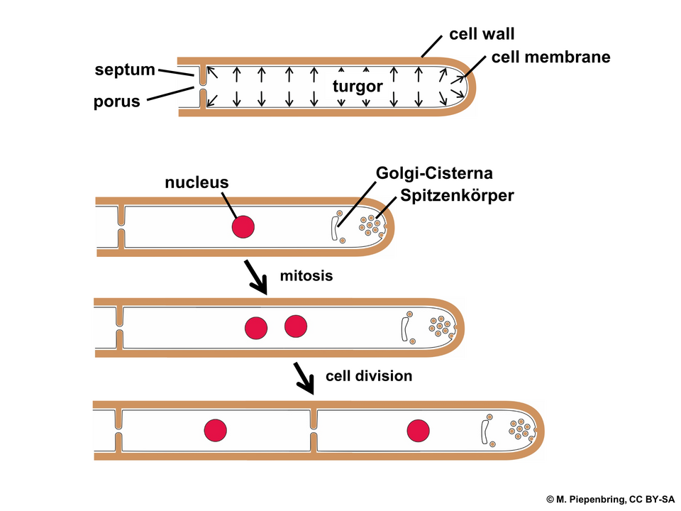

Zoom from the mycelium down to one thread. A hypha grows only at its tip, is fenced into compartments that still share food, and is armoured with the same stuff as a beetle. Those three facts explain how a mycelium conquers a bag of straw.
Warm-up from lesson 4
1. A hypha grows only at its tip
A hypha doesn't stretch along its length; it extends only at its very tip. Just behind the tip sits a cluster of tiny bubbles (vesicles) called the Spitzenkörper, German for "pointed body". It collects vesicles from the cell's packaging centre, the Golgi, and ships them to the tip. Their membranes add to the cell membrane, and their contents become new cell wall. The faster the Spitzenkörper moves, the faster the tip grows. Wikipedia: Hypha
Behind the advancing tip, the hypha lays down cross-walls. New tips appear when a tip splits in two, or when a fresh tip buds from the side of an older hypha. That's branching, and it's how one thread becomes a mycelium. Wikipedia: Hypha

Tip growth. Water pressure inside the hypha (turgor) presses outward, while the Spitzenkörper delivers new wall to the tip. As the tip moves on, a nucleus divides and a new septum forms behind it. Diagram: M. Piepenbring, via Wikimedia Commons, CC BY-SA 3.0.
Why you care: spawn colonizes straw the same way. Tips push outward from every grain and branch into new territory, while older parts stay behind to feed. So more grains, spread evenly, means more launch points and less distance for each front to cover. That's one reason growers use a generous dose of spawn. Lesson 4
2. Septa: walls with doors
The cross-walls are called septa(setti). In most fungi they have pores, so nutrients and small molecules flow from compartment to compartment along the thread. Bread moulds skip septa entirely: their hyphae are one long tube with many nuclei, called coenocytic. OpenStax §24.1 (Fig. 24.5)
Fungal cells are eukaryotes, with a real nucleus and mitochondria like yours. Each is wrapped in a rigid wall of chitin and glucans. Chitin is the same material as insect exoskeletons. The wall gives strength and protects against drying out and some predators. Fungi are closer relatives of animals than of plants, despite looking plant-like. OpenStax §24.1
Practical consequence: because fungi are eukaryotes, ordinary antibacterial antibiotics don't work on fungal infections. OpenStax §24.1
Quick check
Think it through
Puzzle to chew on
Only the tips of a hypha grow, and each tip is microscopic. So how does a mycelium manage to fill a whole log, or, in one honey fungus (chiodino), over 2,000 acres of forest soil? Think first, then open.
One explanation
Branching multiplies the tips. Every tip can split, and new tips can sprout from older hyphae, so the number of growing points keeps increasing. Pored septa let food absorbed far behind the front flow forward to feed them. A small number of tips becomes millions, all advancing at once. Wikipedia: Hypha · OpenStax §24.1 (on the giant Armillaria)
.png){kind=link}